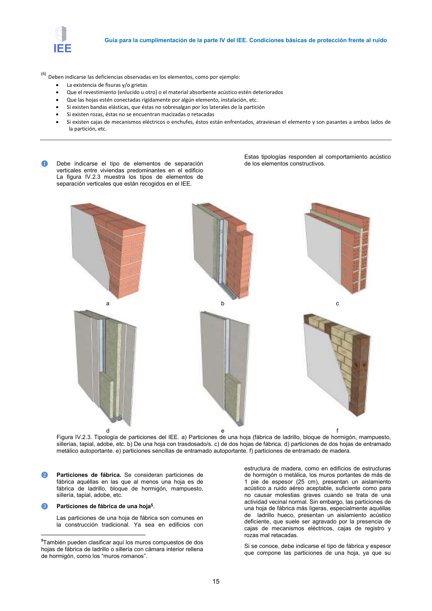

GUIA · Página 15 · versión 2016-11-01
SHA256: 813669d3066c0ff79457d57b80b0512a4fbb248bc5db1f7baf473c369a064738 · página física 15 de 65 · métodos de encabezado
solo si están cotejados.
Formatos: Markdown · JSON de bloques · PDF p. 15 · imagen PNG
Guía para la cumplimentación de la parte IV del IEE. Condiciones básicas de protección frente al ruido
15
(6) Deben indicarse las deficiencias observadas en los elementos, como por ejemplo:
•
La existencia de fisuras y/o grietas
•
Que el revestimiento (enlucido u otro) o el material absorbente acústico estén deteriorados
•
Que las hojas estén conectadas rígidamente por algún elemento, instalación, etc.
•
Si existen bandas elásticas, que éstas no sobresalgan por los laterales de la partición
•
Si existen rozas, éstas no se encuentran macizadas o retacadas
•
Si existen cajas de mecanismos eléctricos o enchufes, éstos están enfrentados, atraviesan el elemento y son pasantes a ambos lados de
la partición, etc.
❶
Debe indicarse el tipo de elementos de separación
verticales entre viviendas predominantes en el edificio
La figura IV.2.3 muestra los tipos de elementos de
separación verticales que están recogidos en el IEE.
Estas tipologías responden al comportamiento acústico
de los elementos constructivos.
a
b
c
d
e
f
Figura IV.2.3. Tipología de particiones del IEE. a) Particiones de una hoja (fábrica de ladrillo, bloque de hormigón, mampuesto,
sillerías, tapial, adobe, etc. b) De una hoja con trasdosado/s. c) de dos hojas de fábrica. d) particiones de dos hojas de entramado
metálico autoportante. e) particiones sencillas de entramado autoportante. f) particiones de entramado de madera.
❷
Particiones de fábrica. Se consideran particiones de
fábrica aquéllas en las que al menos una hoja es de
fábrica de ladrillo, bloque de hormigón, mampuesto,
sillería, tapial, adobe, etc.
❸
Particiones de fábrica de una hoja5.
Las particiones de una hoja de fábrica son comunes en
la construcción tradicional. Ya sea en edificios con
5También pueden clasificar aquí los muros compuestos de dos
hojas de fábrica de ladrillo o sillería con cámara interior rellena
de hormigón, como los “muros romanos”.
estructura de madera, como en edificios de estructuras
de hormigón o metálica, los muros portantes de más de
1 pie de espesor (25 cm), presentan un aislamiento
acústico a ruido aéreo aceptable, suficiente como para
no causar molestias graves cuando se trata de una
actividad vecinal normal. Sin embargo, las particiones de
una hoja de fábrica más ligeras, especialmente aquéllas
de ladrillo hueco, presentan un aislamiento acústico
deficiente, que suele ser agravado por la presencia de
cajas de mecanismos eléctricos, cajas de registro y
rozas mal retacadas.
Si se conoce, debe indicarse el tipo de fábrica y espesor
que compone las particiones de una hoja, ya que su
